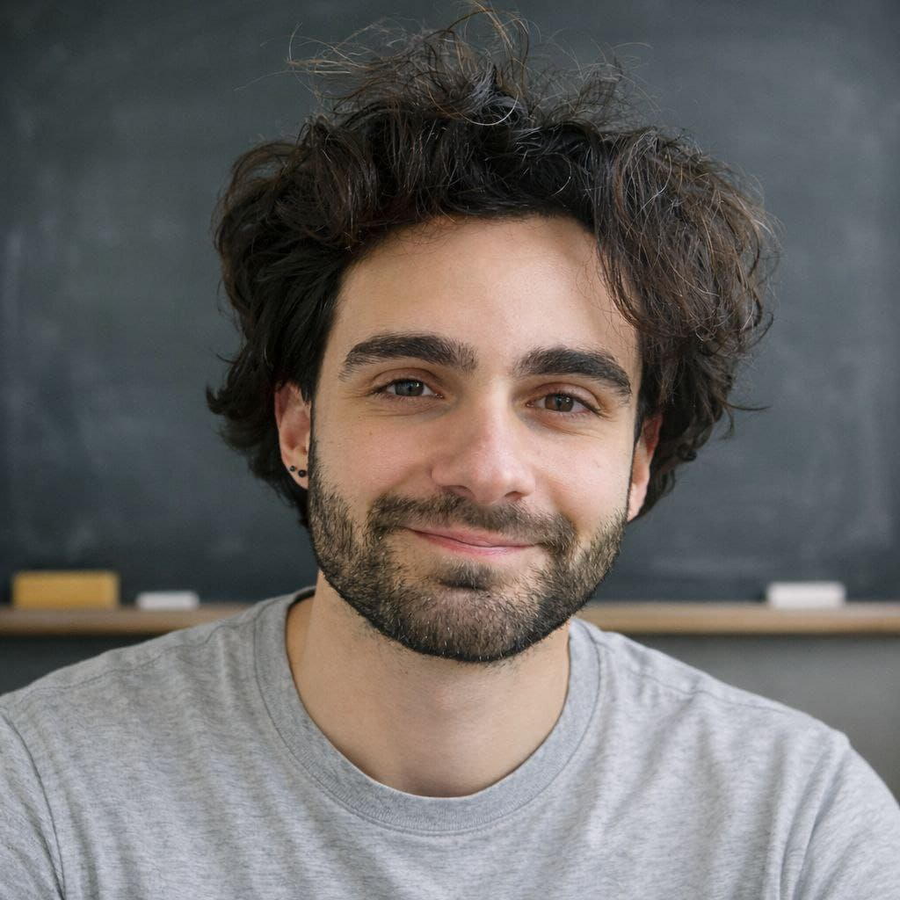

Hello!
I'm Alessandro Fenu. I did my bachelor's in Mathematics at the Università di Pisa, with a thesis in Algebraic Topology. I did my master's both in Italy, at the Università di Pisa, and in Paris, where I completed the M2 in Mathématiques Fondamentales at Université Paris Cité and Sorbonne Université.
My master's thesis, supervised by Prof. Grégory Ginot and co-supervised by Prof. Filippo Gianluca Callegaro, is on the real homotopy invariance of configuration spaces. I defended it at the Università di Pisa and at LAGA (Université Sorbonne Paris Nord).
I'm currently working with a professor at Sorbonne Université on a preprint in Artificial Intelligence. My main interests are configuration spaces and homotopical methods in algebraic topology, and I'm increasingly interested in the computational aspects of algebraic topology.
I'm also attending the Prépa à l'Agrégation at the UFR de Mathématiques of Université Paris Cité, and I'm a colleur in the Mathématiques et Physique prépa at Lycée Fénelon in Paris.
I like mathematics, sushi, and people.
You can reach me at:
- Telegram @Issimaaa
- Personal email alessandrofenuspano@gmail.com
- University email (Université Paris Cité) alessandro.fenu@etu.u-paris.fr

Relevant Documents.
In this section, I upload documents I have written (potentially full of errors and continuously being corrected).
- Master's Thesis: real homotopy invariance of configuration spaces, supervised by Prof. Grégory Ginot and co-supervised by Prof. Filippo Gianluca Callegaro.
- Bachelor's Thesis: Group Completion Theorem and Configuration Spaces
- Spectral Sequences: a LaTeX version of the notes from the last part of the Algebraic Topology A course of 2022-2023. Part of a larger version (still far from complete).
- Algebraic Topology A Notes: notes from the Algebraic Topology A course held in the year 2022-2023 based on the manuscripts provided during the course. They are still to be completed and likely full of my errors.
- Operads & Recognition Principle: a super-summary version of May's theorem on the recognition of iterated loop spaces via operads. A fundamental part of the proof is missing, which however follows from my thesis.
- First approach to ∞-categories: an extended version of my introductory seminar on infinity categories. Essentially my exam for Category Theory.
- Orlik-Solomon algebras and Orlik-Solomon theorem: a document in Italian on the isomorphism theorem between the homology of a complex hyperplane arrangement and the integer homology of its complement.
Tutoring
Prépa MP at Lycée Fénelon, 2026-2027
For now, I don't need to upload any documents. Feel free to contact me anytime by university email (alessandro.fenu@etu.u-paris.fr).
Arithmetic, 2024-2025
In 2024/2025 I was a tutor for Arithmetic: you can still find the exercises and solutions from those sessions here.
I also remind you that the PHC manages a page where all information about all tutoring sessions is available, starting from 2023: PHC Tutoring.
Appointment for exam simulation: Room G, Fibonacci campus, December 12th from 4 PM to 6 PM.
Text of the second midterm simulation with solutions: Simulation & Solutions.
Exercises for the week of December 16th. I know you have the midterm these days, feel free to use it (whenever you want) as practice. If you want feedback on your solutions, you can send them to me and I will return them corrected. Submit solutions.
Here are the Solutions. Exercise 5 contains theory not covered in class.